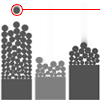

Visual Sedimentation
# addToken()
Examples
|  | a token is a representation of a datastream chunk |
|
scene.addToken({
size:30,
category:1,
t:1360164350473,
texture:{src:'http://www.visualsedimentation.org/img/football.gif'},
})
|
| |
| |
Description
Add token push a token into the scene. A token is the minimal unit of represented data, according to the data flow type it's could be one tweet, one article entry, or a mail or others. Tokens have several attributes.
Syntax
scene.addToken({
category:1
})
Parameters
Parameter in
bold are needed.
| category | number, corresponding to the datamodel (which column in the data set) |
| x | float, incomming x position (in pixel) |
| y | float, incomming y position (in pixel) |
| t | number, timestampe |
| size | number, diameter of the token (in pixel), if it's not defined, took the setting default size |
| fillStyle | a css color value, corresponding to the html5 fillStyle |
| strokeStyle | a css color value, corresponding to the html5 fillStyle |
| lineWidth | a number html5 lineWidth |
| texture | object formated as follow {src:"URI"} |
| callback | object formated as explain here. |
| phy | object formated as follow {density:10,friction:0,restitution:0}, |
| impulse | object formated as follow impulse:{angle:95,power:10}, |
| 'custom' | You can extennd with attribute you want, if they don't have the same name than existing they will be accessible with attr |
| target | Not implemented yet |
| trajectory | Not implemented yet |
Return
The token object.
Related
attr(),
selectAll(),
callback:{},
phy:{},
impulse:{} ,